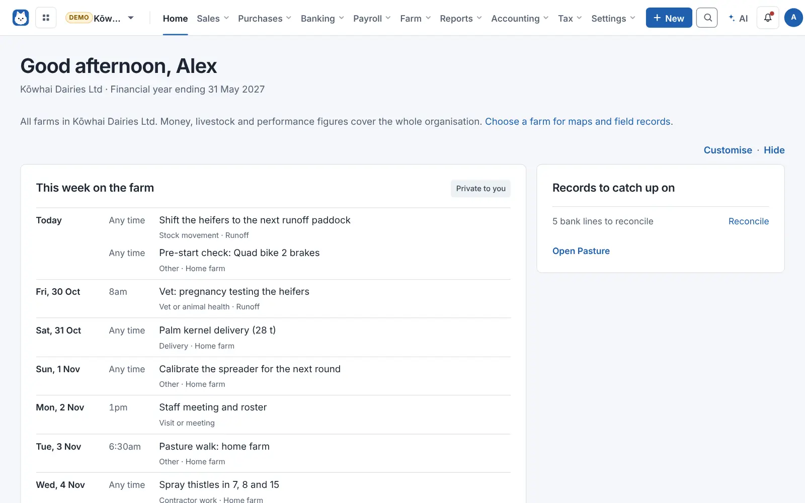
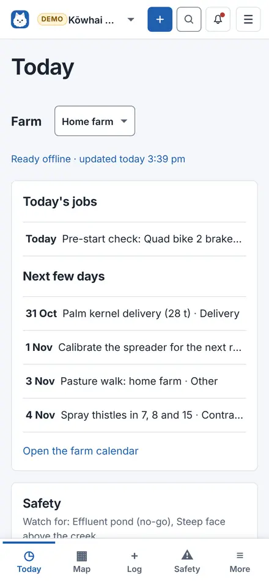
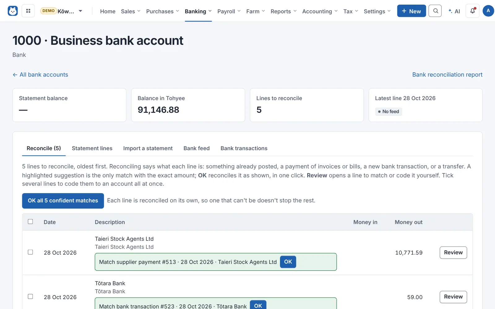
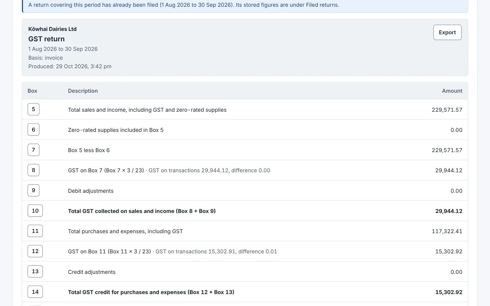
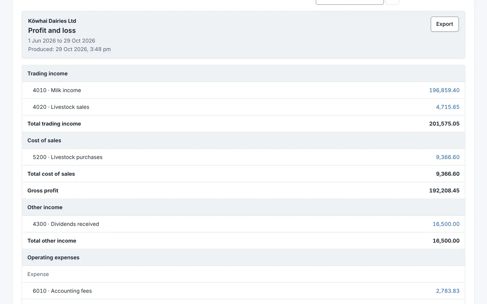
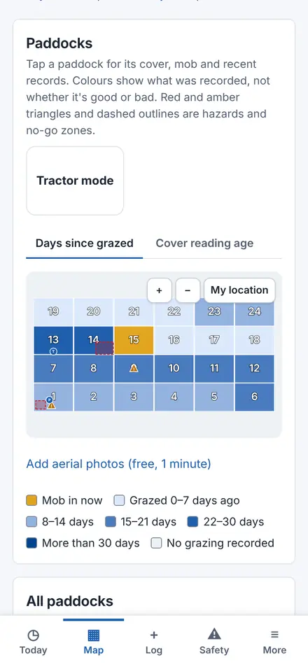
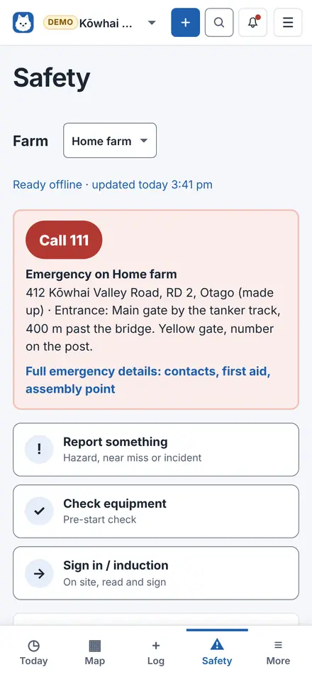
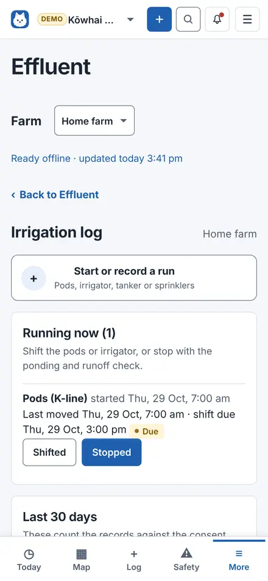
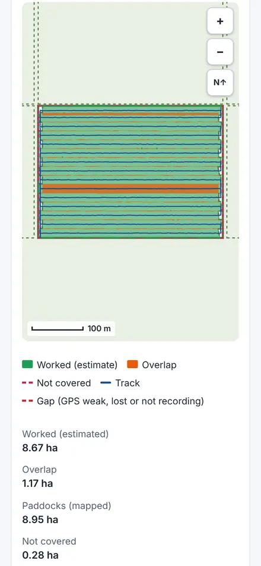
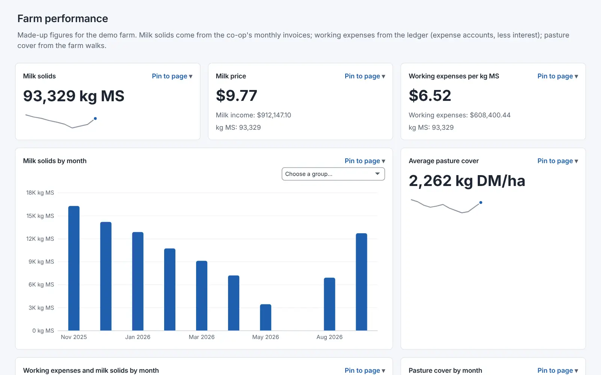

Free and open source, made in New Zealand
Your books and your farm, on a server you own.
Invoices, bank, GST and payroll for small businesses and the people who keep their books. Paddocks, safety and effluent records for farms, on the phone in your pocket, even out of signal.
No subscription and no per-user fees. Early development: try a test organisation first.


For small businesses and bookkeepers
- Bank feeds, reconciliation and bank rules
- GST returns, box by box, with the documents behind them
- NZ payroll, payslips and payday filing files
- Reports, budgets and year-end statements
For New Zealand farms
- Today, Map and Log on your phone, with or without signal
- Hazards, incidents, inductions and pre-start checks
- Effluent runs, pond levels and checks
- Tractor and spreader coverage maps
The books, connected to everything else.
Follow any figure back to the invoice, bill or bank line behind it. Bank matches, bank rules and AI drafts are suggestions until someone says OK, and the database itself refuses unbalanced journals.



Sales and getting paid
- Quotes, invoices, credit notes and repeating invoices
- Pay now links through your own Stripe or PayPal
- Customer statements and who owes what
- Shopify and WooCommerce orders brought in
Bank and bills
- Feeds from Akahu, SimpleFIN, Stripe, PayPal and Wise, or statement files
- Bank rules and one-click suggested matches
- A bills inbox read from your mailbox
- Approval rules and expense claims with mileage
GST and income tax
- GST101A on the invoice, payments or hybrid basis
- A GST audit report behind every box
- Income tax workings and provisional tax, not yet reviewed by an accountant
- IRD account files imported for you to check. No direct filing to IRD.
Payroll, people and jobs
- PAYE, KiwiSaver, Holidays Act leave and payslips
- Payday filing files and bank files for wages
- Timesheets, rosters and clocking in with a PIN
- Jobs and site visits with Start and Finish on a phone
Reports and year end
- Profit and loss, balance sheet, budgets and a cash flow forecast
- Year-end statements as one PDF, and an accountant pack
- Tier 3 and Tier 4 reports for not-for-profits
- Consolidation across several organisations
Customers and sales
- A built-in CRM: companies, people, leads and deals
- Pipelines, forecasts and a sales dashboard
- Follow-ups and sequences that make tasks, never send on their own
- Sales staff who can't see the books
These screens show the books of Kōwhai Dairies Ltd, Tohyee's made-up demo farm; a shop or a trades business has the same screens. The full feature list says what's built, what isn't, and why.
Made for the paddock, not just the office.
Five tabs along the bottom of your phone: Today, Map, Log, Safety and More. Big buttons, one question at a time, and records that wait on the phone until there's signal.
-

Map Paddocks coloured by days since grazed. Tap one for its cover and mob. -

Safety Call 111, report something, check equipment or sign in. -

Effluent Runs, pod shifts and pond levels, logged as you go. -

Tractor mode The worked area, overlaps and gaps from the phone's GPS.
Your phone, your server
Open your Tohyee address on your phone and add it to the home screen. No app store. Your farms' maps, paddocks, a year of pasture and grazing, jobs, checklists and safety details are kept on the phone and refreshed while it's open, each saying when it was last updated.
Out of signal, logs, photos, safety reports, pre-start checks and inductions wait on the phone and are sent once when you're back. The books, payroll, mail and injury details are never kept on it.
Farm safety
Hazards and no-go zones on the map, near misses and incidents with photos, inductions signed on each person's own phone, a gate sign-in for visitors, pre-start checks from a machine's QR code, training with expiry reminders, and chemicals with their safety data sheets.
Records can't be quietly changed: every edit keeps the earlier version. Export a WorkSafe pack for any dates, and have a copy emailed off the farm each week.
Effluent New in 0.18
Set up your irrigators, pods, tanker and ponds, then log each run, shift and pond reading on the phone. Checks, faults and servicing follow the safety rules, reminders show on Today, and a council pack zips up any dates with photos and history, for you to download.
Tractor and spreader mode
Choose the paddock and the equipment's width, press Start and switch Working on and off. You get the worked area, overlaps counted once and GPS gaps, saved to the paddock diary, with GeoJSON and GPX exports.
Staff see the farm, not the money
The Farm staff role records field work and safety reports on the farms chosen for them, without the books, reports or other farms. Owners keep the farm Home, benchmarks per kg of milk solids, livestock for tax, soil tests and fertiliser plans.
Try the demo farm
A server admin can add Kōwhai Dairies Ltd, a made-up dairy farm with about 18 months of books, payroll, farm records, safety and tractor jobs, from the server's Organisations page. It's marked DEMO on every page and never emails or connects to anything.
Farm screens show Kōwhai Dairies Ltd, Tohyee's demo farm. Everything in it is made up.
Reports you can click into.
Analytics brings in the books, spreadsheets and databases, and builds reports the way Power BI and Looker Studio do: report pages, click a chart to filter the others, drill down by financial year, slicers and bookmarks.
- Sources
- Your books and CRM, Excel and CSV, SQL Server, PostgreSQL, MySQL and Google Analytics.
- PowerPoint
- An add-in puts a live report on a slide. Each viewer signs in and sees only what they're allowed to.
- Your own AI
- Connect Claude.ai, ChatGPT or another AI app by signing in to Tohyee. You choose what it may do, and can disconnect it at any time.
The Analytics calculations aren't reviewed yet, so check figures before relying on them. The add-in and AI sign-in haven't been tried in real PowerPoint or with real AI apps yet, and both need Remote access.

Keep the keys yourself.
Tohyee runs on a computer you control, like a media server at home. One server holds as many organisations as you need.
One database each
Every organisation gets its own PostgreSQL database, so it can be backed up, restored or moved on its own.
Backups you can check
Nightly encrypted backups, checked again each week, a recovery kit and a restore wizard for a replacement computer.
Sign in your way
A password with two-step, a passkey (Face ID, fingerprint or Windows Hello), or Google for invited people.
Invite the team
Invite people from People and roles with the role they need. New people get a setup link by email.
Open to inspection
AGPL v3. More than a thousand worked accounting examples, and more than 2,000 tests run against a real database.
What's new, and what isn't built yet.
Each release has notes saying what changed, what to do before updating, and what hasn't been tried for real.
-
0.19 Farm as its own app
Tabs on every farm page, Use my location on every map, opt-in farm team locations, and install steps for each browser, including Firefox.
-
0.18 Effluent and LINZ aerial photos
Effluent systems, daily logs, pond levels, checks and a council pack. Aerial photos on farm maps with your own LINZ key, set up in three steps.
-
0.17 Tohyee on your phone
Add it to your home screen, farm information kept offline, work without signal, and tractor and spreader mode. Includes 0.15 and 0.16: farm safety, Today, Map, Log and More on a phone, the Farm staff role, passkeys and invites.
-
0.14 The demo farm
A made-up dairy farm with books, farm records and Analytics reports to explore.
-
0.13 AI and PowerPoint
Connect AI apps by signing in, and the PowerPoint add-in for live reports.
-
0.12 Analytics like Power BI
Many more charts and maps, report pages, click-to-filter, drill-down and calculations. Also several farms, backups you can check, and Sign in with Google.
Not built yet
- Rainfall, photo and voice notes, animal treatments, and births and deaths in the farm Log
- Phone notifications for effluent and safety reminders
- Linking grazing mobs with livestock accounting classes
- Filing GST or income tax directly to IRD
- Stock bins, lots, serial numbers and variants
Next, in rough order
- An accountant's review of the income tax examples
- Supplier overpayments and prepayments
- Backdated stock movements with proper re-costing
- IRD's employee details file for payroll
Start with a test organisation.
Download the Windows installer, or run Tohyee from source on Linux or Docker. The server app walks you through the first organisation, backups and remote access.
Choose TohyeeSetup from the release's files. Early development, AGPL v3, no warranty. Review returns and reports before relying on them. Hosting and connected services may have their own costs.
A few practical things
Do I need a separate computer for each organisation?
No. One Tohyee server can hold many organisations. Each gets its own PostgreSQL database and its own people.
How do I get it on my phone?
Open your Tohyee web address on the phone and follow "Get Tohyee on this device": on an iPhone, Safari, Share, Add to Home Screen; on Android, Chrome, Install. It needs an https address (Remote access or Tailscale HTTPS). A home-network address like 192.168.x.x works in the browser but not offline. On Android there's also an optional app (an APK from the releases) that keeps tractor mode recording with the screen locked and sends reminders. See the phone app guide.
Does it connect directly to IRD?
No. Tohyee works out GST and income tax figures and imports IRD account files for you to check, but it doesn't file returns, pay IRD or ask for your myIR password.
Will it tell me if my farm is compliant?
No. Farm safety and effluent keep careful records and packs you can hand over. They don't decide what the law or your consent needs. See farm safety and effluent for the details and open questions.
Where do I get help or suggest something?
Open a GitHub issue with what you were trying to do. Leave passwords, recovery codes and real financial data out of public reports.